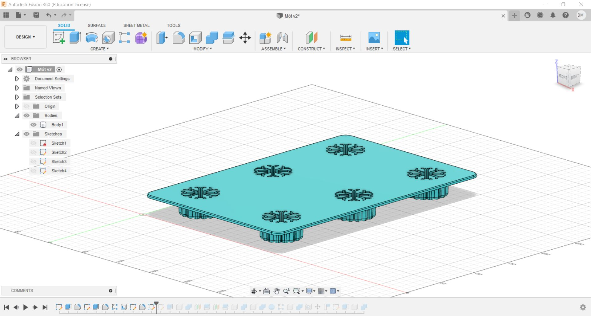
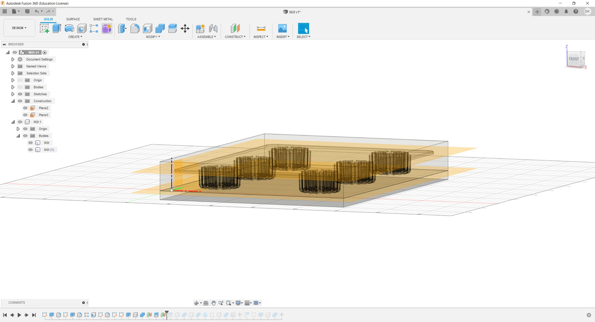
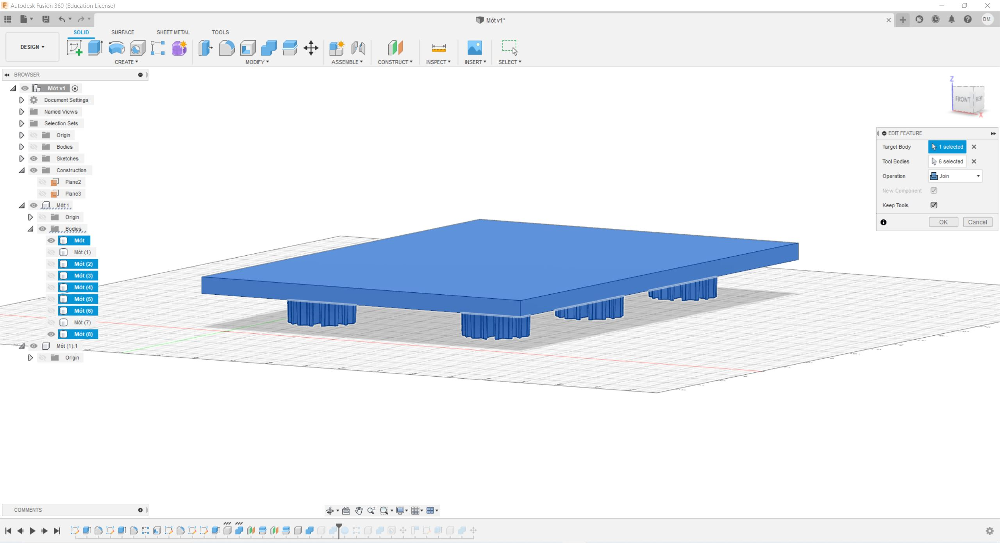
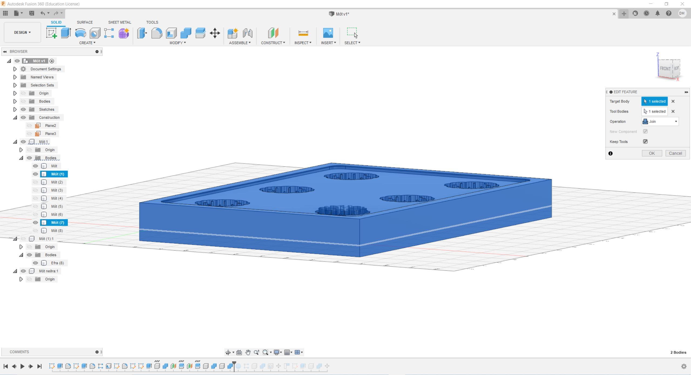
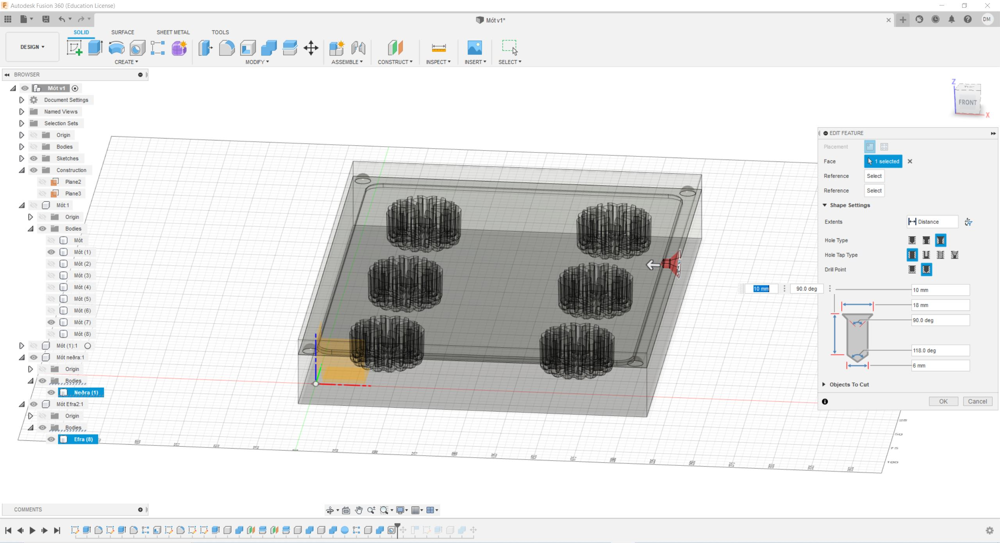

Verkefni 5 - Að fræsa og undirbúa mót
Verkefnalýsing
Í þessu verkefni á að hanna, teikna, og undirbúa mót fyrir fræsingu, en vegna COVID-19 þá var ekki hægt að framleiða þetta verkefni. Það sem að hópurinn ákvað til að framleiða var klakaform. Þessi hópur samanastendur af mér sjálfum ásamt Birtu Hákonardóttur og Elísu Ósk Jónsdóttur. Í hnappnum hér að neðan má nálgast hópaverkefnið en þar er samantekt af verkefninu í heild sinni
Skipting verkefnis
Í þessu verkefni fékk Birta það hlutverk að hanna og teikna klakaformið, ég fékk það hlutverk að teikna mótið sem að myndi og svo hafði Elísa umsjón yfir því að útbúa skurðarferla sem og að hrema og taka þá upp í Fusion, í stað þess að framleiða mótið í raun
Mótagerð
Birta sá um hönnun og teikningu verkefnisins en hennar hluta má nálgast með því að ýta á hnappinn hér fyrir neðan
Eftir að Birta var búin að teikna hlutinn þá gat ég byrjað að teikna mótið en til þess notaðist ég við Fusion en það má nálgast í hnappnum hér að neðan
Ég byrjaði á því að niðurhala Fusion skránni frá Birtu sem að innihélt klakaformið en skráin leit svona út þegar að ég náði í hana:
Til þess að byrja að gera mótið, þá gerði ég ferhyrning utan um klakaformið og extrudaði hann aðeins stærri en klakaformið sjálft. Síðan notaði ég combine skipunina í Fusion og cut og þá dró ég klakaformið frá kassanum og þá leit hluturinn svona út:

Síðan með því að nota "construct" flipann og gat ég búið til ný plön til þess að skera mótið í sundur vegna þess að við erum að nota "two part mold." En ég þurfti tvö plön til að skera vegna, mynd af hlutnum skornum í þrennt ásamt plönunum mjá sjá hér að neðan.
Síðan notaði ég combine og join skipunina til þess að sameina topinn við formin fyrir snjókornin síðan gerði ég það sama fyrir botninn, ég passaði að haka við "new component" og "keep tools" til að mynda nýtt body en skipanirnar litu svona út
 Síðan bjó ég til 10mm "sphere" og setti á hornin á neðra forminu en það er gert til þess að festa formin tvö saman. Ég notaði síðan skipunina "rectangular pattern" til þess að hjálpa mér að staðsetja kúlurnar á horn mótsins.
Síðan notaði ég enn eina ferðina "combine" og "cut" til þess að mynda holur í efra mótið, til þess að það væri nú hægt að festa mótin saman.
Síðan notaði ég skipunina hole, til þess að búa til gat, svo að það væri hægt að setja efni í mótin, en ég stað setti gatið í samskeytunum og stillti eiginleika gatsins eins og var gefið í myndbandi frá kennara en mynd af gerð gatsins má sjá á eftirfarandi mynd
Síðan færði ég mótin tvö aðeins í sundur til þess að sjá þau betur og gerði síðan ramma utan um mótin sem að væri vaxið sem að væri fræst út, síðan væri svo helt siliconi í vaxið og þá væri silicon mótið sjálft komið. En mótin líta þá svona út

En lokamótið, eða það sem að er hérna á síðustu myndinni er það sem að væri fræst út úr vaxinu sem að myndi síðan mynda mótin

Síðan var komið að því að Elísu en hún sá um það að útbúa skurðarferla fyrir mótin og herma síðan framleiðsluna, en verkefnið hennar má nálgast í hnappnum hérna að neðan
Tímaskráning
Tímaskráning fyrir þetta verkefni má sjá í töflunni hér að neðan
Tímaskráning fyrir verkefni 5
| Velja verkefni og verkaskipting | 2 klst |
| Vinna í Fusion | 4 klst |
| Vefsíðugerð | 3 klst |
| 9 klst |
Skrár
Fusion skrá fyrir þetta verkefni má nálgast hér
Stuðnings myndbönd
Myndbönd sem að ég notaði til stuðning á meðan að ég var að vinna í mótagerðinni má nálgast hér og hér